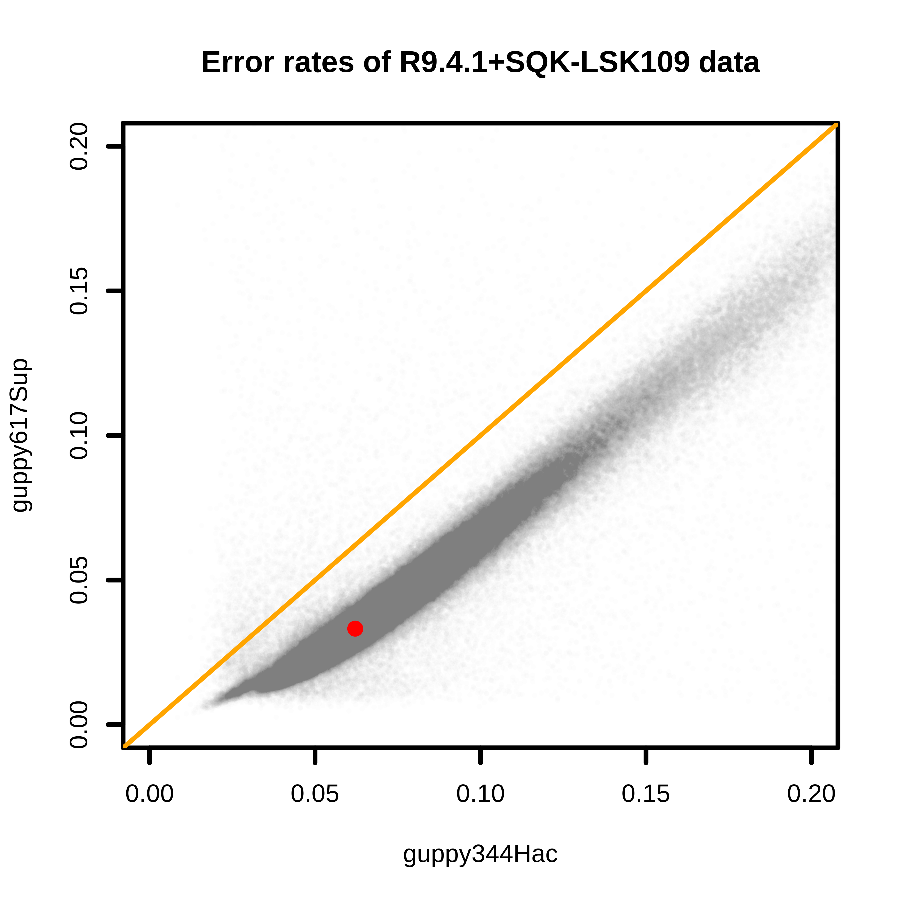
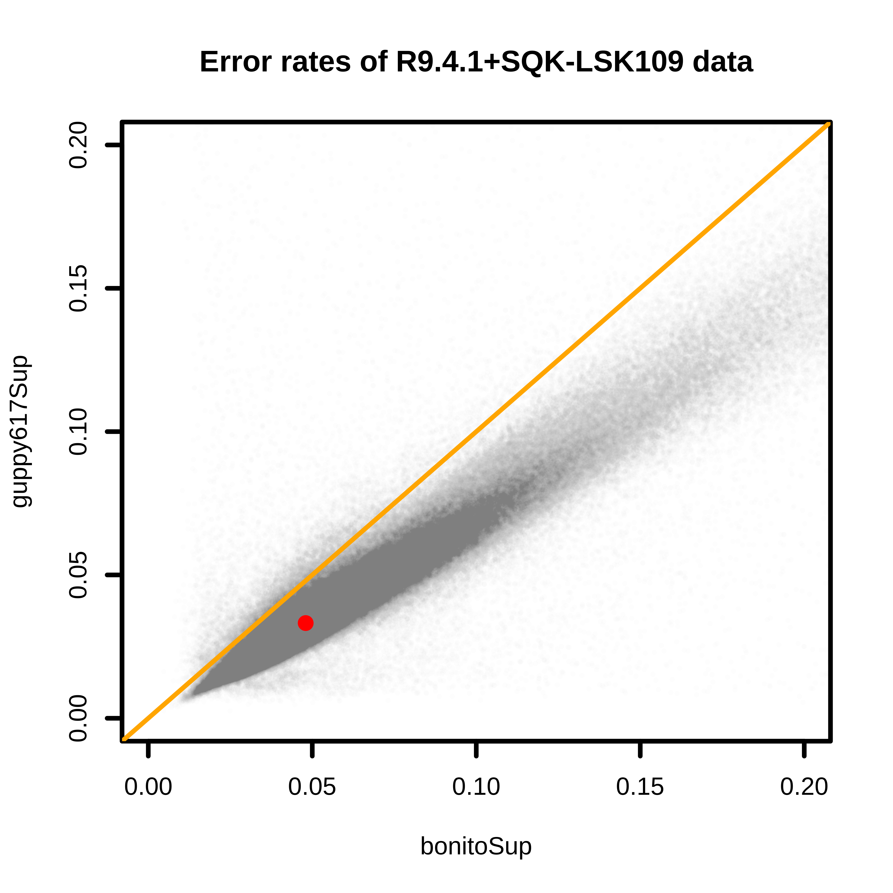

Base quality of ONT nanopore reads from different basecallers

Overview
The selection of the basecaller or the algorithm impacts base quality of sequences of Nanopore reads. Here we tested basecallers Guppy and Bonito on fungal genomic data generated using R9.4.1 and SQK-LSK109. Genomic DNA was extracted from cultured mycelia of a Pyricularia oryzae isolate, which causes the blast disease in wheat.
To evaluate read error rates, basecalled reads were aligned to a high-quality reference genome that was assembled and polished from data generated from the same isolate. The accuracy of the reference genome is estimated to be higher than 99.9%. Therefore, polymorphisms deteted between reads and the reference genome represent sequence errors.
Three sets of reads were generated from the same Nanopore fast5 by using bonito (version 0.5.3), guppy (version 3.4.4), and guppy (version 6.1.7). For bonito, the dna_r9.4.1_e8.1_sup@v3.3 was used. For basecaller guppy, the model dna_r9.4.1_450bps_hac.cfg was used when guppy3.4.4 was implemented; the model dna_r9.4.1_450bps_sup.cfg was used when guppy6.1.7 was implemented.
Results
Comparisons between base quality of reads from Guppy 3.4.4 and 6.1.7 found that Guppy 6.1.7 resulted in much higher quality reads. The median error rate has been reduced almost half from 3.4.4 to 6.1.7 (6.2% to 3.3%). The comparison might not be very fair since the “hac” model was used for 3.4.4 and “sup” was used for 6.1.7.

Comparisons between base quality of reads from Bonito 0.5.3 and Guppy 6.1.7 found that Guppy 6.1.7 resulted in higher quality reads. The median error rates are 4.8% and 3.3% for Bonito and Guppy 6.1.7, respectively.

Conclusion
The model for super-accuracy reads in Guppy can produce higher-quality data than the counterpart model using in Bonito. For Bonito, the model can be trained using own data, which can be tested in the future.